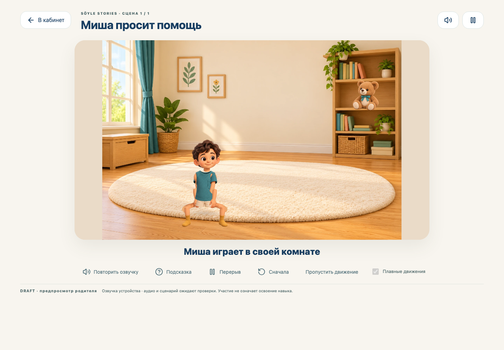
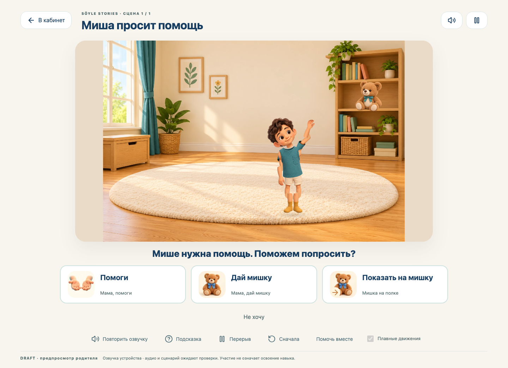
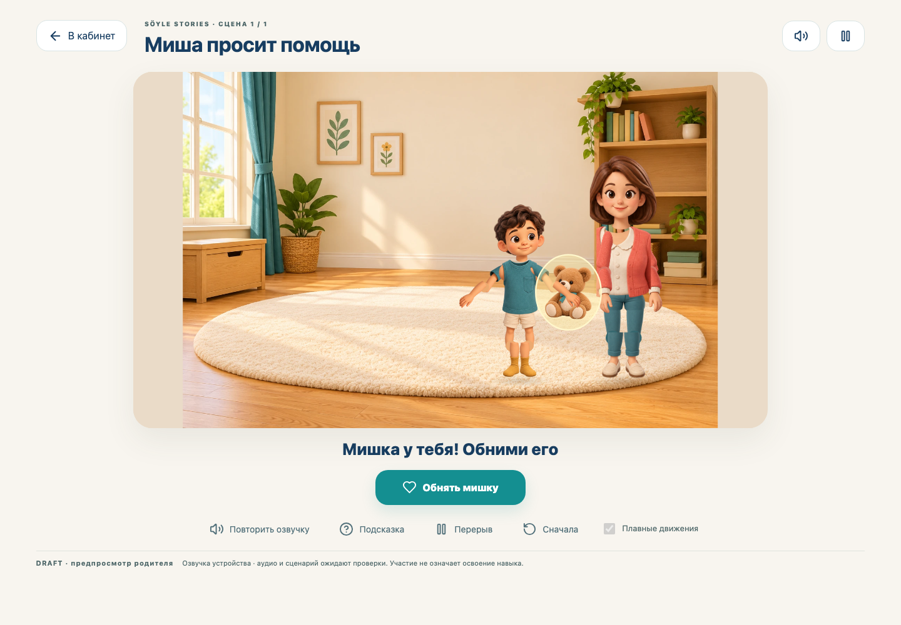
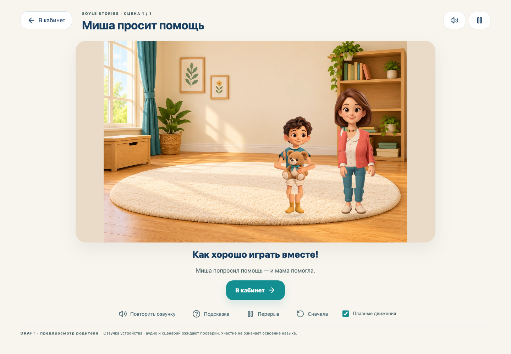
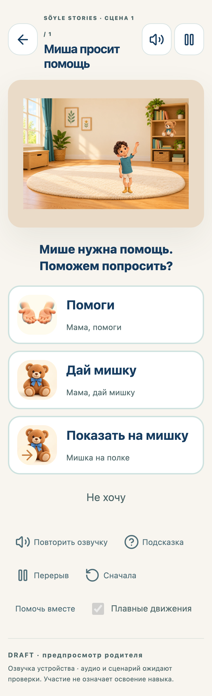
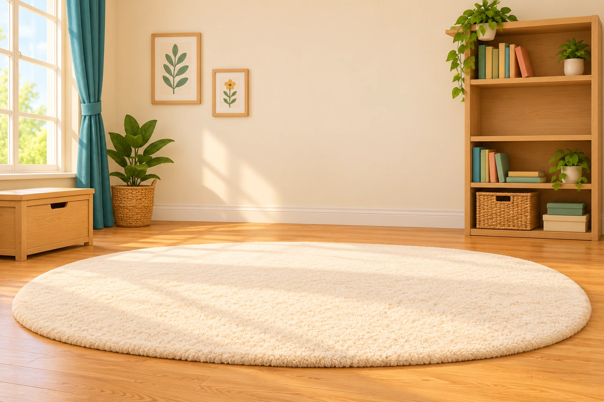
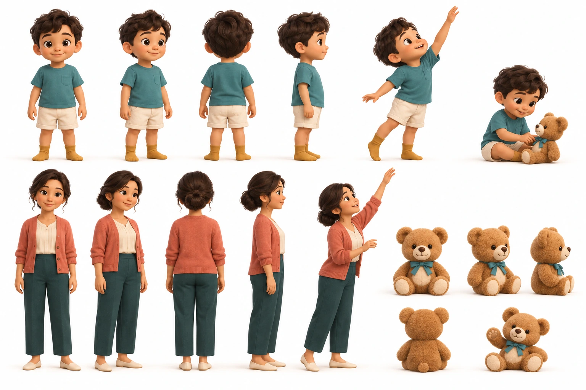
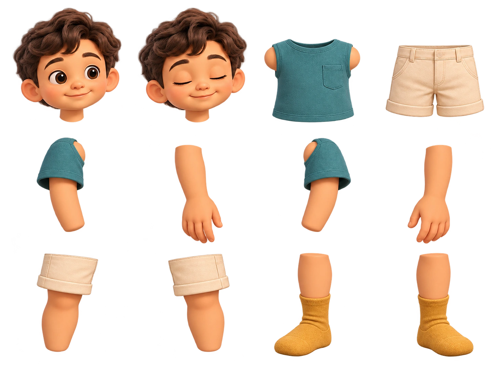
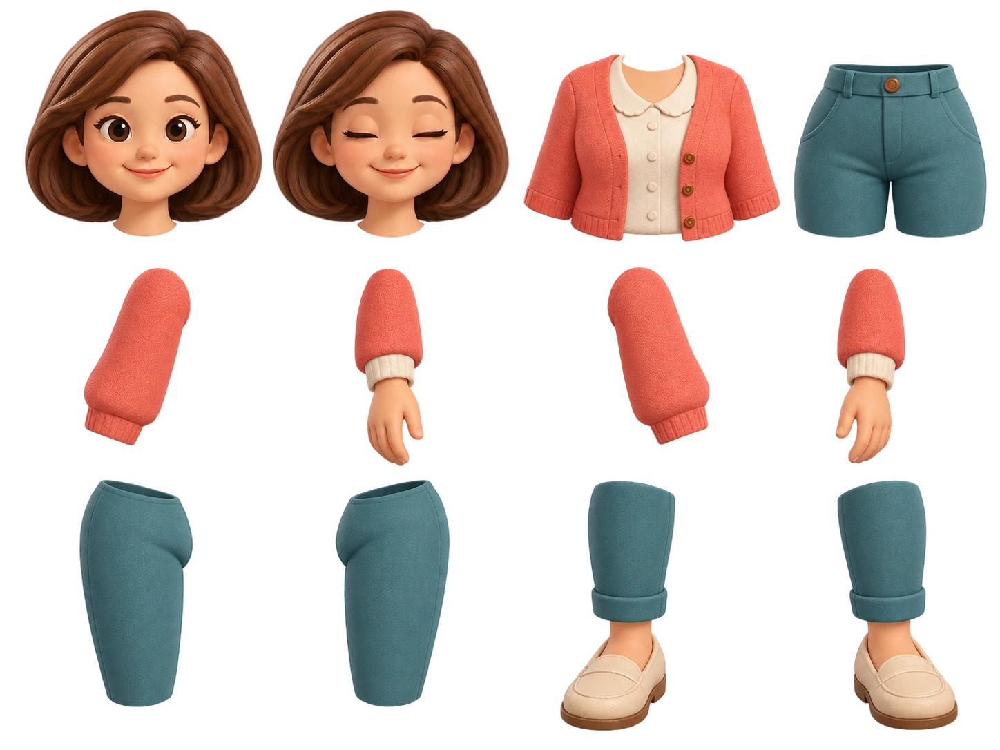
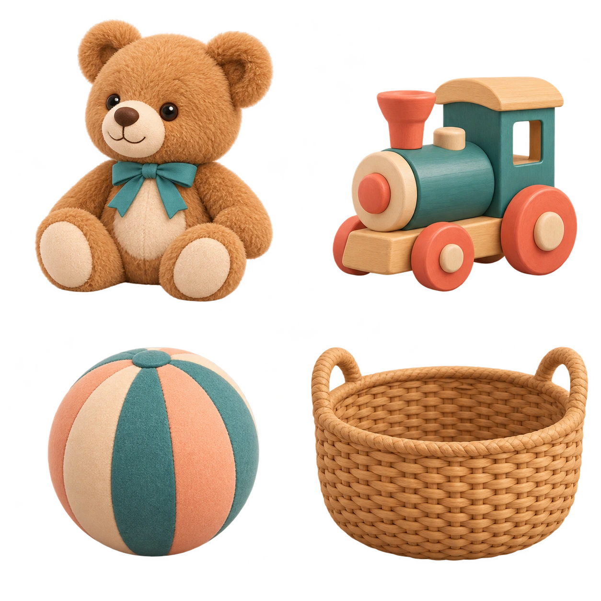

SÖYLE STORIES 3.0 · DRAFT · ОДНА СЦЕНАМиша просит помощь
Одна непрерывная комната: Миша замечает игрушку, пытается достать её, просит помощь, мама входит и передаёт мишку. После отдельного нажатия Миша обнимает игрушку.
Непрерывная запись работающего браузера. Без монтажа из скриншотов. Видео без звука: автоматическая проверка использует управляемую имитацию речи. В приложении подключена озвучка устройства с отменой и повтором; утверждённые аудиофайлы пока отсутствуют.
Где открыть сценуВойти родителем → «Кабинет родителя» → «Любимая игрушка» → «Открыть живую историю». Детям черновик не опубликован. Продакшен в этой работе не обновлялся.
Проверенная сцена

Начало: отдельный персонаж в постоянной комнате
Ожидание просьбы без ограничения времени
Передача игрушки из руки в руку
Отдельное действие: обнять мишку
Телефон 320 px: крупные карточки и доступные кнопкиЧто проверено и какие ограничения остаются
54 frontend и 62 backend проверки. Браузер: полный проход на четырёх размерах экрана; после последних визуальных правок повторно desktop и 320 px. Проверены движение суставов, три владельца игрушки, клавиатура, touch, пауза, восстановление, повтор, reduced motion, контраст и отсутствие горизонтальной прокрутки. Производственная сборка проходит.
Это 2D-риг из отдельных иллюстрированных частей, анимируемый SVG + GSAP. Голова, моргание, плечи, локти, бёдра и колени управляются отдельно; мишка привязан к координатам руки. Это не полноценная 3D-анимация: тонкая пластика, мимика и деформация ткани ограничены качеством составных ресурсов.
Сохранение использует существующую авторизацию и профиль ребёнка; результаты не меняют клинические оценки. Ссылки на цели и навыки описательные. Методическая, AAC, художественная и аудиопроверка ожидаются; публикация и полноценное административное утверждение не завершены.
Ресурсы для анимации

Environment sheet · одна фиксированная комната
Character sheet · исходный стилевой референс
Миша · 12 прозрачных частей для рига
Мама · 12 прозрачных частей для рига
Object sheet · мишка переиспользуется как отдельный объектРесурсы созданы через image_gen. Animation state sheet · Композиция сцены. Размеры, привязки, версии и состояния указаны в манифесте; промпты генерации.
Реализация
SVG выбран для небольшого числа независимых объектов и доступных областей нажатия; GSAP управляет последовательностями, параллельными движениями и отменой. PixiJS не требуется для этой нагрузки; Rive и Spine требуют отдельного авторского анимационного пакета.
State machine: frontend/lib/storybook/cinematic/timeline.ts; отрисовка: rig.ts; сохранение: backend/app/cinematic_storybook.py. Прогресс версии 2 хранится отдельно от старой книги.